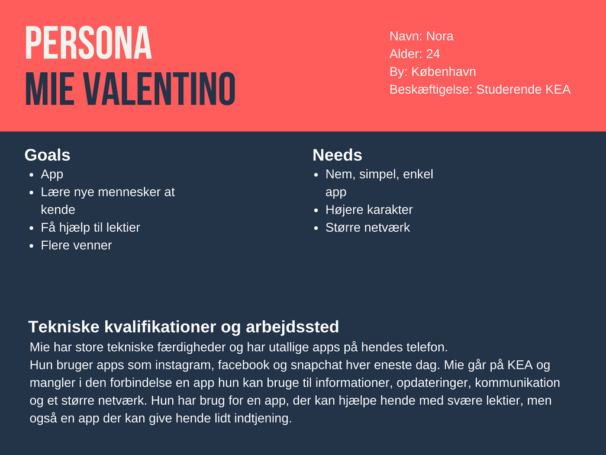

KEA APP
Link til Github
Spørgeskema

Brugerresearch
Indsamling af data
Data er indsamlet ud fra ovenstående spørgeskema. Målet for indsamling af data er at finde frem til en løsning (app) der både dækker afsender og modtagers behov. Data blev indsamlet i form af kvantitavmetode, som spørgeskema. Spørgeskemaet blev besvaret online på google analyse af ca. 50 elever.
Modtagers behov

- Simpel app løsning: skema, afleveringer, information
- Billigere/ bedre kantine
- Lektiehjælp / elev hjælpeordning

Experience map
.png)
Problemformulering
“Multimediedesignstuderende på den danske og den internationale linje har ikke meget med hinanden at gøre, det vil KEA gerne gøre noget ved. Men hvordan kan en KEA app understøtte dette? KEA app’en må også gerne forbedre de studerendes muligheder for at få et arbejde efter endt uddannelse.”
Persona
Storyboard

Idehistorie
Historien der illustreres i storyboardet omhandler en Mie der ikke kan finde ud af sine lektier og Kasper der godt kan. Mie får derefter en ide. Hun vil downloade og bruge KEA appen KEA Studies, da hun herinde kan finde hjælp og selv tilbyde hjælp til svære lektier. Herinde finder hun Kasper der er dygtig til HTML. Mie og Kasper aftaler en dag, tidpunkt og mødested. Mie får hjælp og derefter sender hun et beskendt beløb via KEA pay til Kasper som tak for hjælpen. Næste fredag mødes de to tilfældigt til fredags bar får en øl, snakker og bliver derefter gode venner.
Features og funktionaliteter
Brugssituation
- Slå noget op/find noget: Hvis man har brug for hjælp til at få lavet lektier, hvis man selv vil udbyde hjælp
- Check-in/status: Tjekke status på ens opslag (søg hjælp eller udbyd af hjælp) .
Appens typiske brugsituation er slå noget op/find noget.
Brugskontekst
Appen skal bruges når man har brug for lektiehjælp eller hvis man selv vil udbyde lektiehjælp. Appen kan bruges hvis man har brug for at tjene lidt ekstra peng og hermed vil udbyde hjælp. Appen bruges derfor forskelligt alt efter hvilke tema / emne man har svært ved.
AOF
Aktiviteter
- Søg om hjælp
- Udbyd hjælp
- Sende beskeder
Objekter
- Profil
- Startside
- Søg
Funktionaliter
- Beskrivelse af sig selv, semester, linje, styrker, svagheder, dage der passer bedst at mødes
- Opslået opslag (hjælp, søger, andet)
- Søg efter bestemt emne, ofte stillede spørgsmål osv.